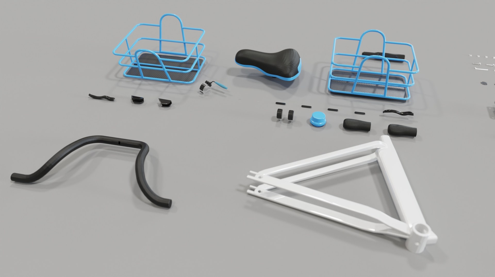
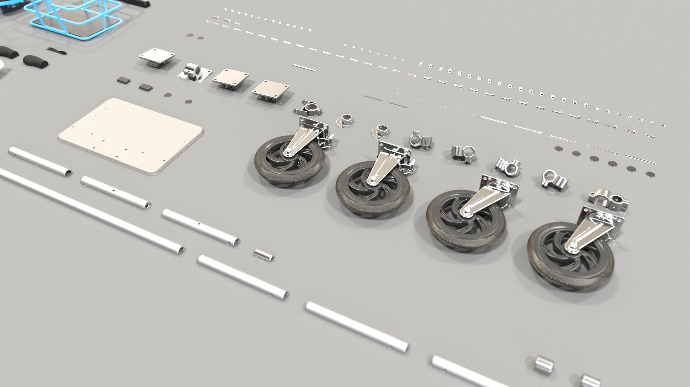

Reusing the parts as found emits about 15 kg CO₂e less per walker than remelting them into the same shapes.

a
bThe walker is made where the bikes are retired.
Stripping, one saw cut and bolting need a hacksaw, a drill, spanners and hex keys. A neighbourhood bike workshop can build it from local scrap and catalogue parts, and later repair it.
Against remelting, reuse saves 15.4 kg CO₂e (−94%); against primary material, 52.8 kg.
Remelting aluminium already avoids most smelting emissions (0.52 against 14.8 kg CO₂e per kg). Reuse additionally avoids re-extrusion, drawing, welding, heat treatment and coating, the remelt losses, and arc-furnace steelmaking.
Range against remelting: 12–19 kg CO₂e.